Battle Overview
Abyss Awakening use a standard turn battle system.
Every Character and Ennemy will play their respective turn one by one.
UI
The order in which Actors will play their turn is shown on the right end of the battle UI.
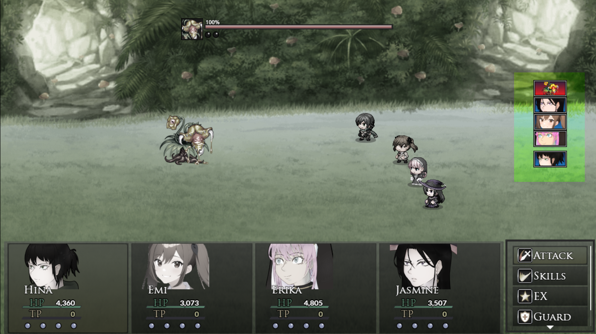
The order in which Actors will play their turn is shown on the right end of the battle UI.
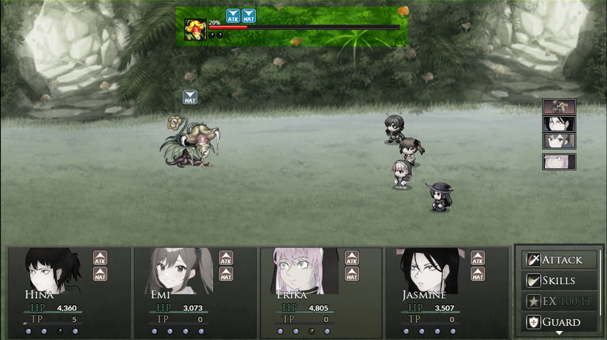
The details about the allied characters is shown on the bottom part of the battle UI.
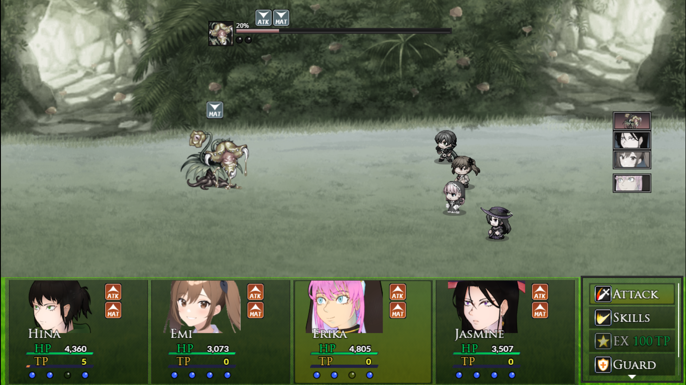
Resources
All allies will have a TP gauge right under their HP gauge.
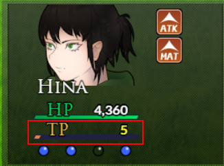
This TP gauge is mostly used to execute powerful EX skills, and is increased by 10 upon attacking.
Under the TP gauge, blue spheres will show you wether each of the character's skills is ready for use
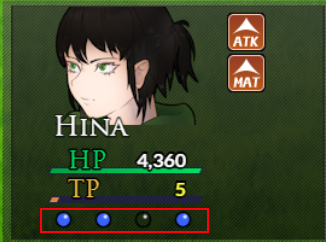
Enemies will show green spheres under their HP gauge.
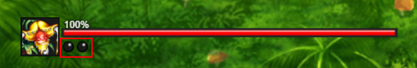
These spheres are called SP. When all SP are filled, the enemy will use an EX skill on the next turn.
States
On the right side of the character's UI, states affecting the character will be shown.
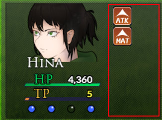
States affecting the enemy can be found over their HP gauge.
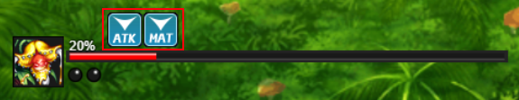
When hovering an enemy, character or their portrait, you will show details about each state affecting them.
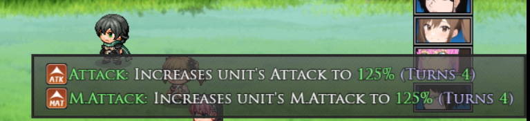
Battle Flow
A turn will end after all allies and all enemies played their turn.
However, more than one action can be used in a character's turn.
Attacking, Guarding or using your EX skill will end your turn.
Activating skills or using items will not end your turn.
You can chose to flee battle by pressing the return button durint your turn in battle.
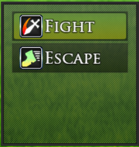
Some battles cannot be escaped.
Skills
Skills are activated by selecting the skill option during battle.
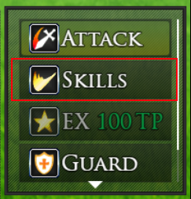
Skills will have various effects and some will have special costs.
As mentioned previously, skills will not consume your turn.
However, most skills will have cooldown before they can be used again.
EX
EX skills are powerful ultimate attacks.
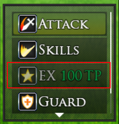
Most EX skills will require your TP gauge to be full in order to be used.
In those cases, the entire TP gauge will be consumed when the EX skill is used.
Unlike regular skills, EX skills do not have cooldown.
Items
Items can be used at any time during a character's turn.
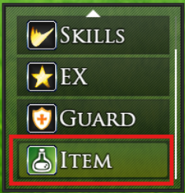
Like skills, they will not end your turn when you use them.
Each item type have a maximum ammount you can carry.
Items used will be lost.
Guard
Guarding will reduce all damage taken by 50% until the end of the turn.
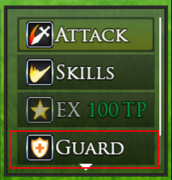
It will however end your turn without attacking.
Unlike attacks, guard only generates 5 TP.
Some attacks are unblockable, guard will not reduce damage taken from these attacks.
Some attacks have a Guard Crush effect. If blocked, the damage will not be reduced and Guard Crush effect will be applied to the target. Guard Crush will prevent the user from using guard for a few turns.
Enemies
Enemies will attack every turn, charging one SP each time.
When all SP are filled, they will use their specific EX move.
These are powerful attacks, so be prepared !
Some enemies will also prepare skills unpon reaching a certain HP percentage.
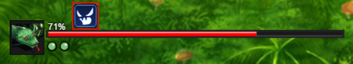
When enemies have prepared a skill, they will gain the status effect : "Special Attack".
When under the status "Special Attack", their next action will be a specific special skill.
Enemies can have several EX and Special attacks.
Enemy special skills (based on HP%) will take priority over their EX (based on SP) if both conditions are met.